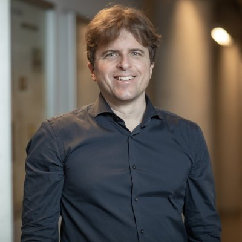
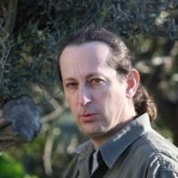
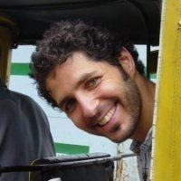
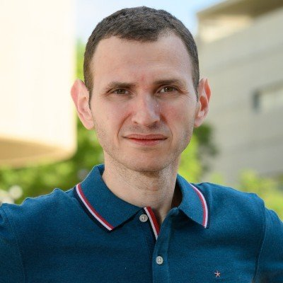
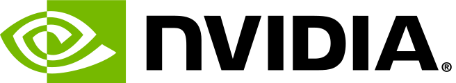
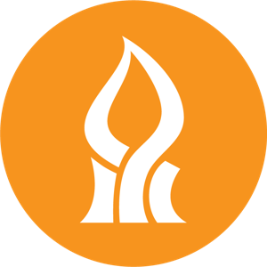
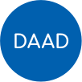

Keynote
Stefan Schmid
Professor
TU Berlin
Self-Adjusting Networks
First call · One-day workshop
Networking and Systems for AI
AI has become a systems problem. Training and serving today's models is limited less by algorithms than by the machines and networks underneath them: interconnect topology, congestion, scheduling, memory and energy.
NetSysAI brings together researchers and industry engineers working at that boundary, from datacenter fabrics and self-adjusting networks to efficient models and hardware-aware learning, for a day of talks and discussion in the Negev.

Stefan Schmid
Professor
TU Berlin
Self-Adjusting Networks

Eitan Zahavi
Distinguished Architect
NVIDIA
Talk title TBA
Asaf Aharoni
Distinguished Software Engineer
Talk title TBA

Noam Attias
Director of Engineering
Amazon · Annapurna Labs
Talk title TBA

Chaim Baskin
Assistant Professor
BGU · Decart
Talk title TBA
Stefan Schmid is a Professor at the Technical University of Berlin, Germany. He received his MSc and PhD from ETH Zurich, was a postdoc at TU Munich and the University of Paderborn, a Senior Research Scientist at T-Labs in Berlin, an Associate Professor at Aalborg University, Denmark, and a Full Professor at the University of Vienna, Austria. He spent a sabbatical as a Fellow at the Israel Institute for Advanced Studies (IIAS). He received the IEEE Communications Society ITC Early Career Award (2016) and an ERC Consolidator Grant (2019).
Tentative The detailed program with talk titles will be posted here. Times are indicative and subject to change.
| 09:30 | Registration, coffee & networking |
| 10:00 | Welcome, greetings and opening remarks BGU, DAAD and partners · Chen Avin (BGU) |
| 10:30 | Morning session Keynote: Self-Adjusting Networks, Stefan Schmid (TU Berlin) Two invited talks, speakers and titles TBA |
| 12:45 | Lunch break DAAD information stand for short consultations |
| 13:30 | Afternoon session Two invited talks, speakers and titles TBA |
| 15:00 | Coffee break DAAD information stand for short consultations |
| 15:30 | Graduate student session Short talks by MSc and PhD students |
| 16:30 | Closing remarks |
A dedicated block of short talks by MSc and PhD students. If you are working on networking or systems for AI, we invite you to present your work in a short talk (about 10–15 minutes).
To apply, tick the short-talk option in the registration form and add a title and a short abstract.
Attendance is free, but registration is required (for campus entry, catering and seating).
Marcus Family Campus, Be'er Sheva, Israel.
Building and hall: TBA. Signs will be posted from the campus entrances.
Campus maps: bgu.ac.il · Train schedules: Israel Railways · Buses: Moovit or Google Maps.
Take the train to Be'er Sheva North / University station (not Be'er Sheva Center). The station connects directly to campus via a covered pedestrian bridge, a few minutes' walk. Direct trains run from Tel Aviv, Haifa and other cities along the coast.
Take the train from the airport station toward Tel Aviv, change at Tel Aviv HaHagana to a Be'er Sheva train, and get off at Be'er Sheva North / University. By car or taxi the trip takes about 90 minutes, depending on traffic.
From the center of Israel, take Route 6 or Route 40 south to Be'er Sheva. Parking instructions and gate access for registered participants will be posted here closer to the date.
Please bring an ID for campus entry. The workshop is held on a Thursday; public transport runs normally.
Questions? Contact us at avin@bgu.ac.il.



